-
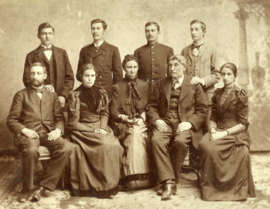
Кобилянські, 1894 р. Стоять: Олександр, Юліан, Степан, Володимир.
Сидять: Максиміліан, Євгенія, Марія (мати), Юліан (батько), Ольга.
-
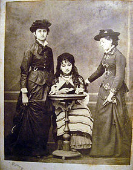
Ольга Кобилянська з Марією та Ольгою Устиянович
-
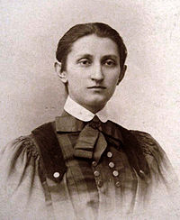
Ольга Кобилянська, 1888
-
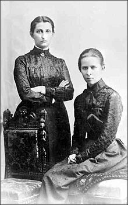
Ольга Кобилянська із Лесею Українкою, 1901 рік
-
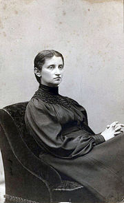
Ольга Кобилянська, 1908 рік
-
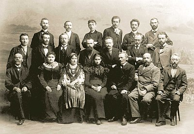
Кобилянська на з'їзді українських письменників у Львові з нагоди
100-ліття публікації «Енеїди», 1898 р (сидить у центрі). У першому
ряду: М. Павлик, Є. Ярошинська, Н. Кобринська, О. Кобилянська, С.
Лепкий, А. Чайковський, К. Паньківський (старший). У другому ряду:
І. Копач, В. Гнатюк, О. Маковей, М. Грушевський, І. Франко, О.
Колесса, Б. Лепкий. У третьому ряду: І. Петрушевич, Ф. Колесса, Й.
Кишакевич, І. Труш, Д. Лукіянович, М. Івасюк.
-
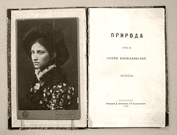
Книга «Природа», видання 1897
-
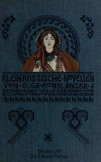
Книга Кобилянської «Малоруські новели» з ілюстраціями Августи
Кохановської. Мінден, 1901
-
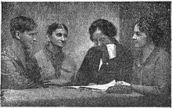
З Іванною Блажкевич, Оленою Кисілевською й Ольгою Гузар, 1934
-
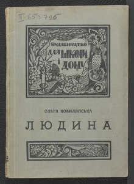
Повість Людина. 1931
-
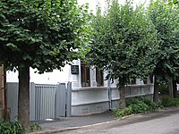
Музей Ольги Кобилянської в Чернівцях.
-
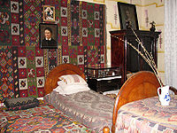
Спальня Ольги Кобилянської в літературно-меморіальному музеї
письменниці.
-
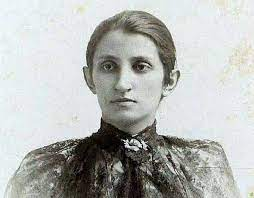
Ольга Кобилянська, липень 1894 року
-
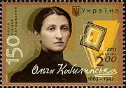
О. Кобилянська на поштовій марці, 2013
-
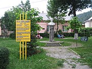
Пам'ятник О. Кобилянській на її батьківщині в Ґурагуморі
(Румунія).
-
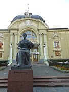
Пам'ятник О. Кобилянській у Чернівцях
-
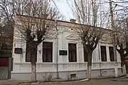
Будинок-музей Ольги Кобилянської у Чернівцях
-
Меморіальна таблиця на будинку-музею О. Ю. Кобилянської